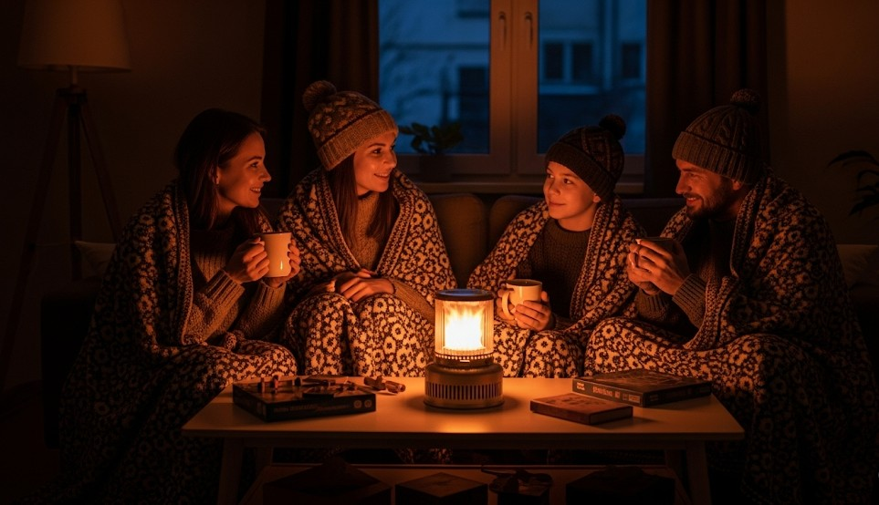

Emergency Heat Without Power: Safe, Smart, Warm
Objective
Keep a small space warm safely during a winter outage without causing fire or CO incidents.
Room Strategy
- Pick one room. Smallest, most interior, minimal windows.
- Seal it. Towels at gaps; blankets over doorways; foil/reflectix on windows.
- Sleep low. Mattresses and bags on floor; add throw blankets over the top.
Heat Sources (Safe)
- Body heat. People + pets are heaters; use shared bedding.
- Hot water bottles. Boil water on safe stove; use screw‑top bottles in towels.
- Car as heater. Run 10–15 min/hour; tailpipe clear; CO alarm in room (battery).
Never Indoors
- BBQ, charcoal, propane heaters without indoor rating. If it burns fuel, assume outdoor‑only unless certified for indoor use.
Clothing System
- Dry base, insulated mid, windproof shell; hat + socks + light gloves.
Real Example
Family converted a closet‑sized office, sealed drafts, used hot water bottles and a 15‑min/hr car‑heat plan; room stayed at 15–17°C while house sat at 6–8°C.
Checklist
- Battery CO alarm
- Reflectix/foil + tape
- Hot water bottles
- Extra blankets
Contingencies
- Condensation → ventilate briefly each hour to protect walls.
- Fuel shortage → switch to exercise blocks for warmth boosts.
After‑Action
Pre‑pick your heat room and stage sealing materials now.
← Previous | All Articles | Next →